Calibrare și profilare de monitor
Culori în care poți avea încredere, pas cu pas.
DisplayCAL-CG te conduce de la sondă la un profil ICC verificat: ce pregătești, cum așezi instrumentul, cât durează, ce se întâmplă dacă ceva se oprește. Peste motorul ArgyllCMS, gratuit și deschis.
- 100% gratuit
- GPLv3, fără trial sau activare
- ArgyllCMS inclus și verificat
- RO · EN · ES
- macOS · Windows
Versiunea 3.10.0.dev82 (cg.4) · Apple Silicon pentru macOS, x64 pentru Windows
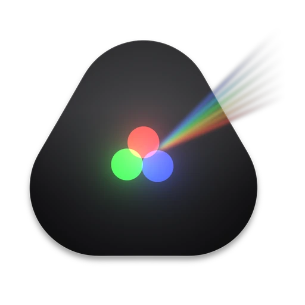
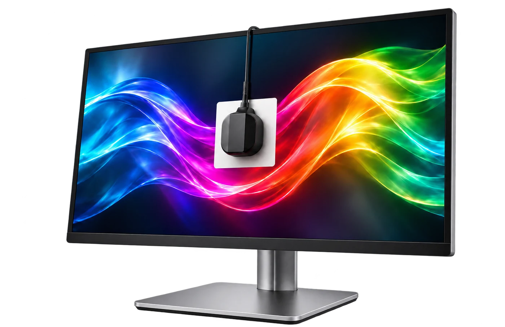
Ce face și pentru cine este
Aplicația măsoară cum își afișează ecranul culorile și scrie un profil ICC pe care sistemul și programele îl folosesc pentru culori corecte. Este pentru fotografi, coloriști, designeri și oricine are nevoie ca monitorul să arate la fel de la o zi la alta și de la un program la altul.
Ce îți trebuie
Un colorimetru sau un spectrofotometru compatibil cu ArgyllCMS (de exemplu din familiile i1Display, ColorMunki sau Spyder). Fără instrument fizic nu se poate măsura nimic: aplicația nu simulează măsurători.
Modelul exact îl confirmi tu atunci când mai multe produse folosesc aceeași identitate USB; aplicația nu ghicește.
Fluxul ghidat, în cinci pași
Fiecare pas spune ce a fost detectat și ce ai confirmat tu, și blochează măsurarea doar cu motive explicate. Toate opțiunile avansate rămân în celelalte file.
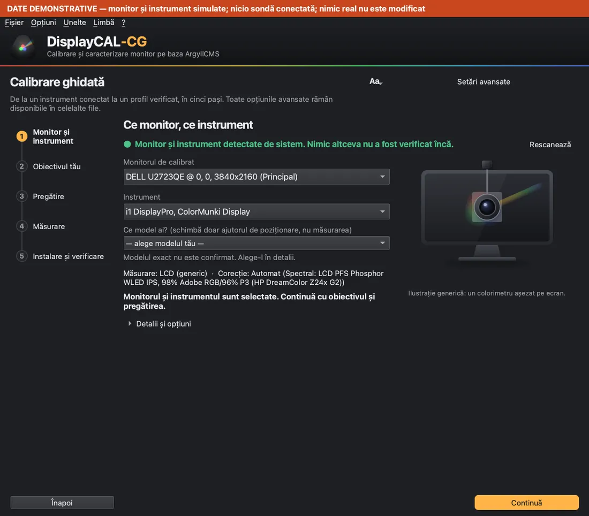
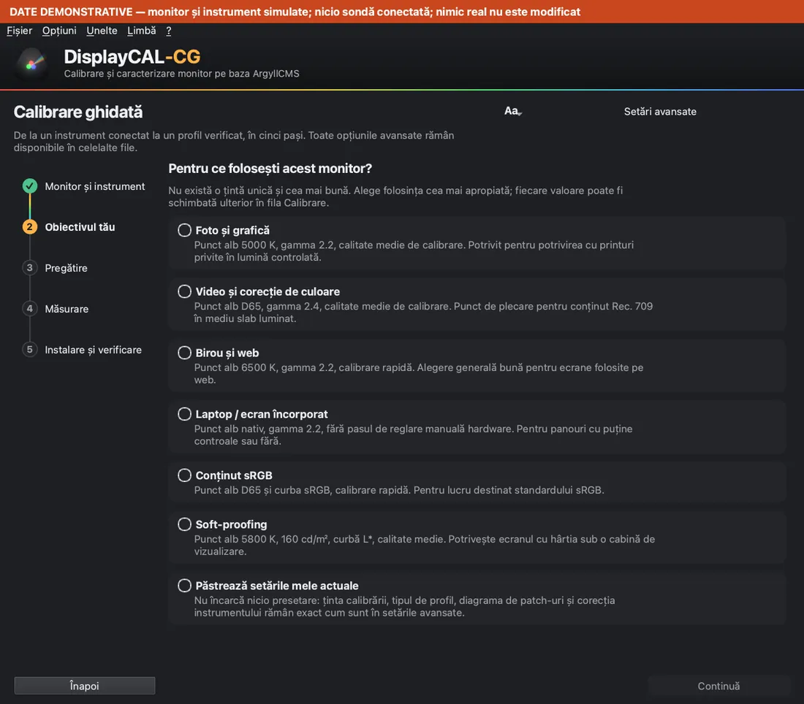
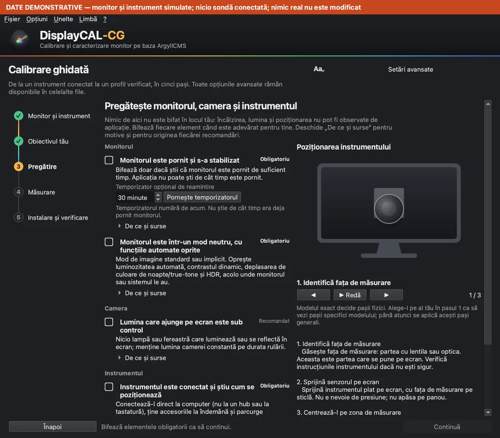
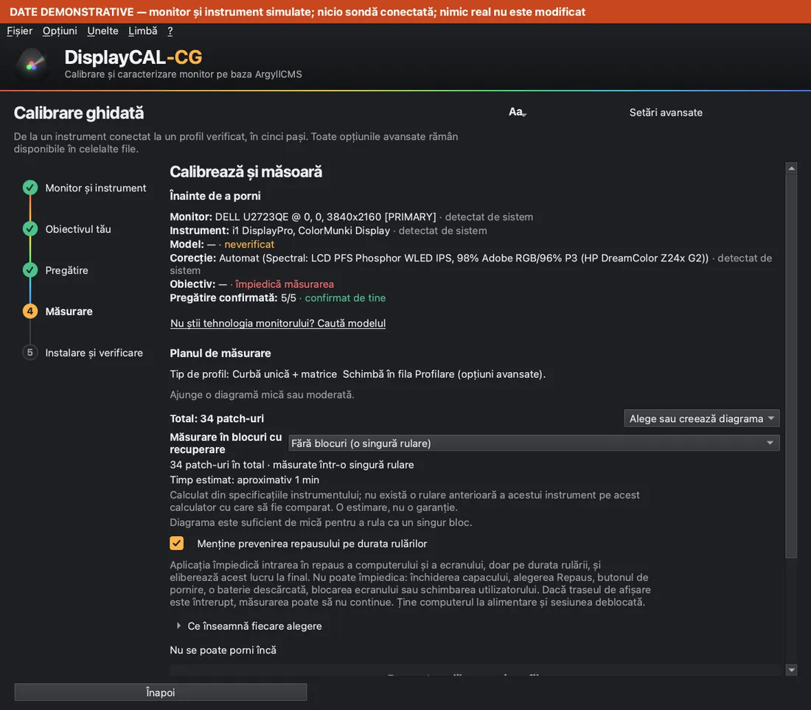
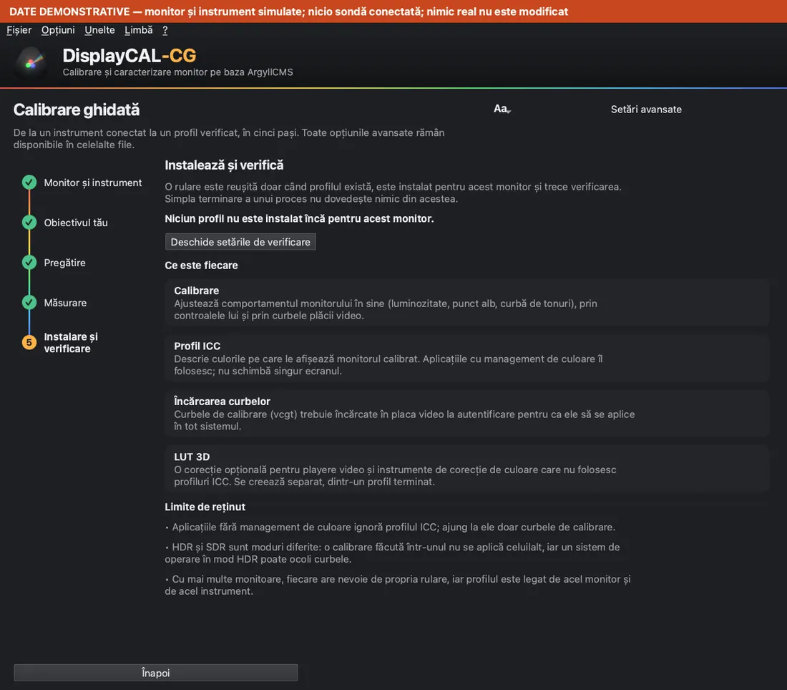
Vezi ce a detectat sistemul. Dacă modelul nu poate fi dedus, îl alegi tu.
Foto, video, birou sau «păstrează setările mele actuale». Fiecare obiectiv încarcă o presetare, pe care o poți schimba după aceea.
Listă de verificare cu surse: monitor stabilizat, mod neutru, lumina din cameră, instrumentul conectat, fără perturbări. Nimic nu se bifează automat.
Planul înainte de pornire: tipul de profil, numărul de patch-uri, blocurile, timpul estimat, împiedicarea repausului.
Profilul se instalează abia după ce există unul valid; apoi aplicația citește înapoi profilul activ și spune dacă este cel creat acum.
DEMOCapturi demonstrative: monitor și instrument simulate, nicio sondă conectată, nicio măsurare reală. Banda de sus din imagine spune același lucru.
Pregătirea și poziționarea sondei
Majoritatea erorilor de măsurare vin din pregătire. Aplicația te însoțește, dar nu poate observa lumina din cameră sau cât timp a stat monitorul aprins: acestea le confirmi tu.
- Monitorul pornit și stabilizat (recomandarea de 30 de minute apare doar pentru instrumentele la care producătorul o indică).
- Mod de imagine neutru, cu luminozitatea automată, contrastul dinamic și filtrele de culoare oprite.
- Lumina din încăpere sub control: fără lampă sau fereastră care luminează sau se reflectă în ecran.
- Instrumentul conectat direct la computer, nu printr-un hub.
- Alegerea corecției potrivită tipului de ecran; aplicația nu o alege automat în locul tău.
Cum se așază instrumentul
- Identifici fața de măsurarePartea cu lentila sau optica este cea care se sprijină pe ecran. Verifică instrucțiunile instrumentului tău dacă nu ești sigur.
- O așezi pe ecranSprijină senzorul plat pe ecran, cu fața de măsurare pe sticlă. Nu apăsa pe panou.
- O centrezi pe zona de măsurareCentrează-l pe pătratul de măsurare afișat de aplicație și ține-l nemișcat pe toată durata rulării.
Schemă generică, nu fotografie de produs. Pașii generali nu înlocuiesc documentul producătorului instrumentului tău.
Calibrare, profil ICC, verificare, LUT 3D
Patru lucruri diferite, în această ordine firească; LUT-ul 3D este opțional:
- 1
Calibrare
Aduce monitorul la o țintă (punct alb, luminozitate, curbă de tonuri) prin controalele lui și prin curbele plăcii video. Produce curbe de calibrare, nu un profil.
- 2
Profilare ICC
Măsoară cum arată culorile ecranului calibrat și scrie profilul ICC. Tipul profilului este felul în care măsurătorile sunt descrise aplicațiilor.
- 3
Verificare
Măsoară din nou și compară cu ce prezice profilul. Arată o abatere, nu o garanție: limitele sunt explicate în ghid.
- 4
LUT 3D
Un tabel folosit de o singură aplicație sau dispozitiv care îl încarcă (de exemplu un instrument de etalonare sau de redare), independent de felul în care alte programe citesc profilul ICC.
Planul de măsurare, înainte de pornire
Trei numere separate, ca să nu se confunde: totalul de patch-uri din diagramă, cel mai mare bloc și numărul de blocuri. Mărimea blocului nu schimbă niciodată totalul; decide doar cum este tăiată aceeași diagramă.
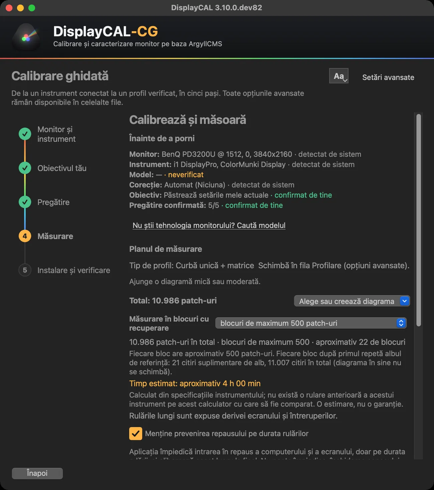
- Total
- Câte patch-uri are diagrama aleasă sau creată. Nu există o limită fixă în aplicație; diagrame de peste 10.000 de patch-uri au fost create și împărțite în blocuri în teste.
- Blocuri
- O rulare lungă poate fi tăiată în blocuri salvate pe disc pe măsură ce se termină. Fiecare bloc după primul repetă albul de referință; citirile suplimentare sunt afișate separat.
- Timp estimat
- Din viteza măsurată pe acest calculator, dacă există istoric, altfel din specificațiile instrumentului, și aplicația spune care. Este o estimare, nu o garanție.
- Mai multe patch-uri nu înseamnă automat mai bine
- Ajută acolo unde tipul de profil le poate folosi (mai ales LUT), costă timp și lasă ecranul să derive. Verifică rezultatul după profilare.
Dacă o rulare se oprește
Aplicația ține un jurnal al sesiunii. La următoarea pornire îți arată ce s-a păstrat și îți oferă să exporți, să deschizi folderul sau să continui cu blocurile rămase, doar dacă monitorul, instrumentul, modul, corecția și tipul de profil sunt aceleași. O rulare măsurată dintr-o singură bucată nu poate fi recuperată dacă este întreruptă: de aceea blocurile sunt recomandate pentru rulările lungi.
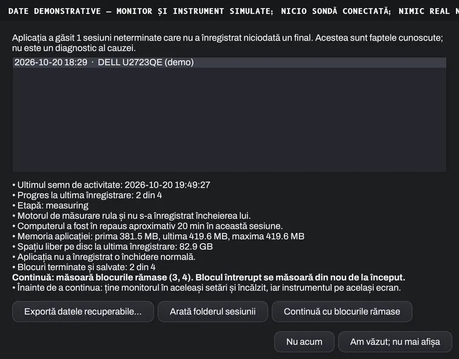
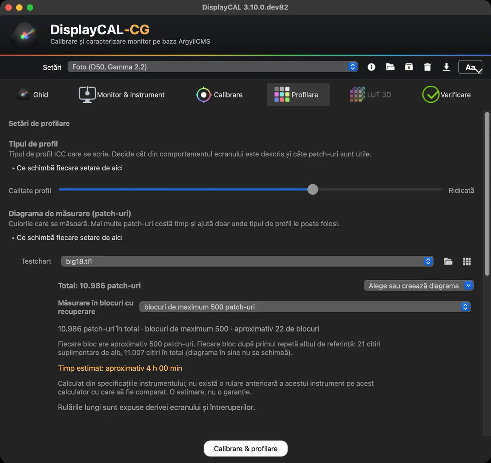
Modul avansat, aceeași configurație
Toate controalele rămân în file, grupate după decizia pe care o iei (tipul de profil, diagrama, comportamentul măsurării…), cu «Ce schimbă fiecare setare de aici» pentru fiecare grup. Ghidat și avansat folosesc aceeași configurație: ce schimbi într-unul se vede în celălalt.
Text mai mare, citibil
Butonul «Aa» schimbă imediat dimensiunea textului în toată aplicația (Normal, Mare, Foarte mare), pornind de la dimensiunea sistemului tău. Nu atinge fereastra de măsurare, mărimea patch-urilor sau culorile.
Pe ambele platforme
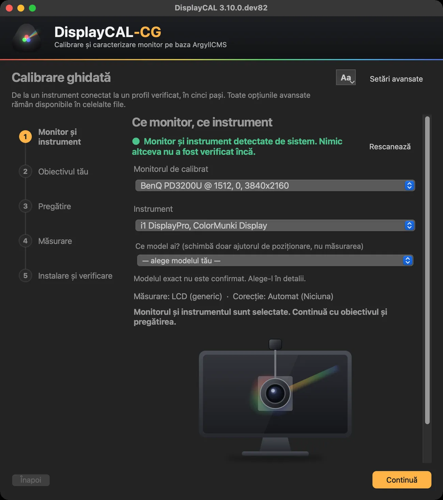
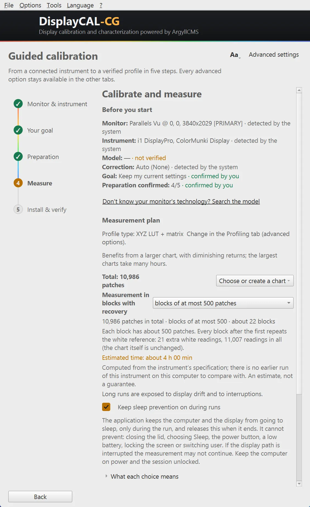
Fără instrument conectat, aplicația spune deschis «Nu a fost detectat niciun instrument» și blochează măsurarea; nu inventează date.
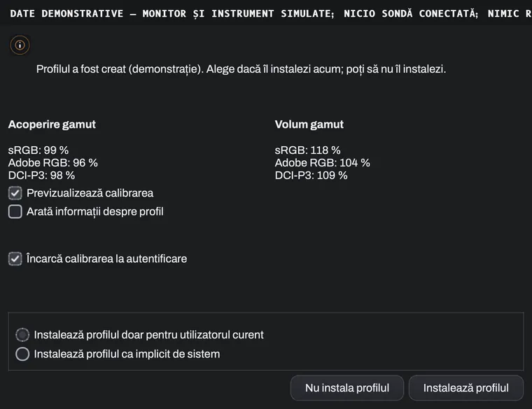
Ce am verificat și ce nu
Stare la versiunea 3.10.0.dev82 (cg.4). Ce nu este în coloana verde nu este promis.
Verificat
- Instalatoarele macOS (.pkg și .dmg) sunt semnate cu Developer ID, notarizate și verificate cu spctl; aplicația pornește.
- Instalare curată pe Windows 11 (VM Parallels, ARM64 cu emulare x64): instalarea, pornirea, ArgyllCMS inclus, exportul de diagnostic.
- O măsurare reală scurtă (38 de patch-uri) cu un colorimetru i1Display pe un monitor extern, pe macOS: repetabilitate, împărțire în blocuri, oprire și reluare, anulare.
- Export de diagnostic local, fără trimitere automată, pe macOS și Windows.
Neverificat
- Sesiunile de mai multe ore (de exemplu 4–8 ore) nu au fost încă validate. Măsurarea în blocuri salvează local blocurile terminate, dar nu garantează stabilitatea, acuratețea sau recuperarea în orice condiții.
- Deconectarea sondei în timpul unei măsurători și revenirea după o pană de curent sau după repaus nu au fost verificate cu un instrument real.
- Alte instrumente decât cel testat funcționează pe baza suportului ArgyllCMS; nu le-am verificat noi.
- Windows pe hardware nativ x64 și macOS pe procesoare Intel: neverificat (pachetul macOS este pentru Apple Silicon).
- Instalatorul Windows nu este încă semnat cu un certificat plătit: SmartScreen poate avertiza. Descarcă-l numai de pe paginile oficiale.
- Traducerile în română și spaniolă nu au fost revizuite de vorbitori nativi.
Gratuit și open source
DisplayCAL-CG este 100% gratuit: fără trial, fără activare, fără funcții plătite. Este o ediție întreținută de Cristi Gordaș, peste același cod și aceeași licență GPLv3 ca proiectul original. Aplicația poate afișa mesajul opțional de susținere al proiectului original; îl poți închide și bifa «Nu mai arăta».
Credite
- DisplayCAL — Florian Höch, autorul original.
- displaycal-py3 — continuarea comunității (portarea pe Python 3).
- ArgyllCMS — Graeme Gill, motorul de măsurare și calcul al profilelor.
- DisplayCAL-CG — adaptări, interfață ghidată și pachete de instalare: Cristi Gordaș.
Sursă, documentație, probleme, contribuții
- Cod sursă
- Versiuni și descărcări
- Raportează o problemă
- Documentația proiectului original
- Ce vine din proiectul original
- Ghidul complet (PDF)
Dacă ți-a fost de folos, o stea pe GitHub ajută proiectul să fie găsit.

Instalare, actualizare, dezinstalare
macOS: deschide .dmg-ul sau .pkg-ul, acceptă licența și instalează; aplicația și uneltele ei ajung în Applications.
Windows: rulează DisplayCAL-CG-Setup.exe, acceptă licența și urmează pașii. Dacă apare SmartScreen: Mai multe informații → Rulează oricum, doar pentru fișierul descărcat de pe paginile oficiale.
Instalatorul include ArgyllCMS, verificat cu o sumă SHA-256 fixă; dacă ar fi vreodată nevoie de o descărcare, un fișier care nu se potrivește este refuzat.
Actualizare: «Verifică actualizări» din aplicație; la acord, aplicația descarcă și instalează noua versiune (macOS cere parola de administrator în fereastra sistemului).
Dezinstalare: pe Windows din Setări → Aplicații; pe macOS mută aplicația și uneltele din Applications în Coș. Datele rămân în folderele aplicației (preferințe, jurnale, sesiuni) până le ștergi tu.
Diagnostic și suport
Aplicația păstrează local jurnale rotative și poate crea un pachet de diagnostic, cu redactare implicită, într-un loc ales de tine. Nu trimite nimic automat: tu decizi dacă îl atașezi la o problemă raportată.